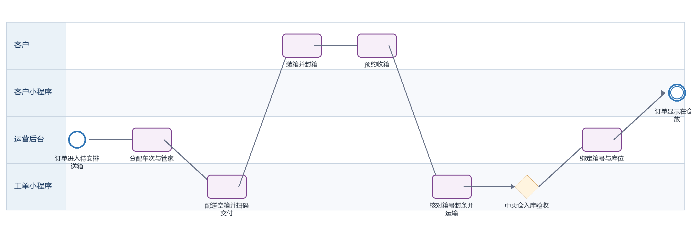

迷你箱送箱收箱入仓 PRD
下载 Word 文档迷你箱送箱收箱入仓 PRD
客户小程序研发详细需求规格 · V2.0 · 2026-09-08
定义首次履约从安排送空箱、客户装箱、预约收箱、运输、入库验收到箱号与库位绑定。
| 属性 | 内容 |
|---|---|
| 文档编号 | MP-BX-02 |
| 适用端 | 客户小程序、运营后台、工单小程序及领域服务 |
| 范围 | 送箱排程、配送轨迹、送达、收箱预约、箱号封条配对、返仓运输、入库验收、库位绑定。 |
| 不在本模块范围 | 路线优化与仓库硬件系统内部实现。 |
1 目标与边界
1.1 本期范围
送箱排程、配送轨迹、送达、收箱预约、箱号封条配对、返仓运输、入库验收、库位绑定。
1.2 不在本模块范围
路线优化与仓库硬件系统内部实现。
1.3 角色与系统责任
| 角色或系统 | 职责 |
|---|---|
| 客户 | 浏览、选择、签约、付款、提交申请、查询进度 |
| 客户小程序 | 采集意图并展示服务端状态，不自行决定价格、库存、资格或审批结果 |
| 运营后台 | 维护主数据、价格、库存、可操作项、审批、异常处理和人工改派 |
| 工单小程序 | 承接送取、验收、搬仓、清仓等线下任务，回传节点、附件和异常 |
| 领域服务 | 保存订单、租约、箱体、预约、支付与合同的权威状态并发布事件 |
2 BPMN 业务流程

圆形表示开始或结束事件，圆角矩形表示任务，菱形表示服务端判断。
跨端节点必须先写入领域服务，再由事件刷新客户侧时间线。
3 状态机与准入
| 状态码 | 客户文案 | 进入条件 | 下一步 |
|---|---|---|---|
| DELIVERY_PENDING | 待安排送箱 | 付款已确认 | 排程 |
| EMPTY_BOX_IN_TRANSIT | 空箱配送中 | 车次执行 | 签收 |
| EMPTY_BOX_DELIVERED | 空箱已送达 | 客户装箱 | 预约收箱 |
| COLLECTION_SCHEDULED | 已预约收箱 | 等待上门 | 核对交接 |
| COLLECTION_IN_TRANSIT | 收箱运输中 | 箱体已配对 | 到仓 |
| INSPECTING | 入库验收中 | 核对箱号封条箱况 | 通过或异常 |
| STORED | 在仓存放 | 绑定库位且租用计费生效 | 可召回 |
| EXCEPTION | 履约异常 | 破损、少箱或封条异常 | 人工处理 |
状态码是跨端契约，中文文案不得作为业务判断条件；写操作必须携带聚合版本并处理409冲突。
4 页面与交互
4.1 首次履约进度
| 属性 | 要求 |
|---|---|
| 建议路由 | /pages/order/detail |
| 入口 | 迷你箱订单 |
| 页面字段 | 当前节点、每节点服务端时间、预约、车次、管家、箱数、预计时间、运输记录、异常提示 |
| 主要操作 | 查看物流、联系客服、在合适状态预约收箱 |
| 通用状态 | 骨架屏、空态、无网络、超时、无权限、数据已变化、提交中、提交成功和提交失败分别实现 |
4.2 收箱预约
| 属性 | 要求 |
|---|---|
| 建议路由 | /pages/appointment/create?type=collection |
| 入口 | 空箱已送达订单 |
| 页面字段 | 订单、可选箱号、全选、地址、日期、时段、联系人、备注 |
| 主要操作 | 选择箱体、提交、改期、取消 |
| 通用状态 | 骨架屏、空态、无网络、超时、无权限、数据已变化、提交中、提交成功和提交失败分别实现 |
4.3 箱体资产
| 属性 | 要求 |
|---|---|
| 建议路由 | /pages/order/box-assets |
| 入口 | 订单详情 |
| 页面字段 | 箱号、封条号、箱体状态、当前位置、库位、最近扫描、异常标记 |
| 主要操作 | 展开查看、联系客服；不可自行修改箱号或库位 |
| 通用状态 | 骨架屏、空态、无网络、超时、无权限、数据已变化、提交中、提交成功和提交失败分别实现 |
5 业务规则
首次履约时间线只追加服务端节点，不允许前端根据时间推断完成。
送箱签收须由工单小程序扫描订单和空箱批次；允许实送箱数与订单数不一致时进入异常。
客户仅在空箱已送达时可创建收箱预约；预约需选择订单下箱体且至少一箱。
收箱人员逐箱扫描箱号与封条并采集交接照片；未配对箱体不得进入运输完成。
入库验收核对数量、箱况、封条和禁存风险；异常箱体单独冻结，不影响其他合格箱体入库。
在仓状态要求 boxId、orderId、customerId、storeLocation 四者绑定成功，且所有写入可幂等重放。
6 接口契约
| 方法 | 接口 | 用途 | 幂等要求 |
|---|---|---|---|
| GET | /box-orders/{id}/journey | 查询首次履约时间线 | 否 |
| GET | /box-orders/{id}/assets | 查询箱体和库位 | 否 |
| POST | /appointments | 创建收箱预约 | 是，clientRequestId |
| GET | /logistics/{orderId}/legs | 查询多程运输 | 否 |
| POST | /box-handover/customer-confirm | 客户交接确认 | 是，handoverId |
通用响应包含code、message、data、traceId和serverTime。
金额使用整数最小货币单位；写接口校验登录身份、资源归属、幂等键和聚合版本。
错误码区分参数、资格、并发、锁定、支付确认、权限和服务不可用。
7 跨端交互和数据一致性
| 方向 | 规则 |
|---|---|
| 小程序到后台 | 只调用BFF或领域服务；后台通过同一业务编号处理。 |
| 后台到小程序 | 后台写领域状态并发布事件，小程序刷新权威状态。 |
| 后台到工单小程序 | 线下任务携带workOrderId、orderId、SLA和附件要求。 |
| 工单到客户小程序 | 扫码、附件和异常先回传领域服务，再生成客户可见时间线。 |
| 消息通知 | 只携带业务编号与深链，不下发敏感合同或门禁凭证。 |
7.1 领域事件
box.delivery_assigned
box.empty_delivered
box.collection_scheduled
box.paired
box.arrived
box.inspected
box.stored
box.exception_found
8 异常与恢复
| 场景 | 识别条件 | 客户侧与后台处理 |
|---|---|---|
| 少送或多送箱 | 扫描数与订单数不一致 | 冻结完成节点并由后台确认变更 |
| 封条异常 | 收箱或入库检测不一致 | 单箱冻结并上传证据，创建仓务异常工单 |
| 预约改期 | 截止前客户发起 | 释放原容量并原子占用新时段 |
| 入库部分失败 | 部分箱异常 | 合格箱进入在仓，异常箱显示独立状态 |
9 非功能与安全
列表首屏P95不超过2秒，详情P95不超过1.5秒；长流程返回受理结果和异步进度。
敏感字段最小化展示，日志脱敏，下载资产使用短时签名URL。
所有状态变更记录前后值、操作者、来源端、原因码、时间和traceId。
支持简体中文、繁体中文、英文；日期、货币和地址按香港业务规范展示。
10 埋点与指标
| 事件 | 触发 | 关键属性 |
|---|---|---|
| page_view | 进入页面 | pageCode、source、orderId、businessType |
| action_click | 点击主要操作 | actionCode、statusCode、orderVersion |
| submit_result | 写操作完成 | requestId、result、errorCode、durationMs、traceId |
| flow_step_changed | 业务节点变化 | fromStatus、toStatus、eventId、operatorType |
11 验收标准
AC-01 每个节点展示服务端完成时间和操作者类型。
AC-02 收箱预约只能选择属于该订单且可收箱的箱体。
AC-03 箱号重复扫描被拒绝且不产生重复绑定。
AC-04 部分箱异常不覆盖同单其他箱体状态。
AC-05 全部合格入库后订单进入在仓存放并开放召回操作。
12 研发交付清单
| 角色 | 交付物 |
|---|---|
| 产品与设计 | 页面状态稿、字段字典、三语文案和验收用例 |
| 小程序前端 | 页面、组件、登录恢复、状态处理、埋点和错误恢复 |
| 后端 | OpenAPI、状态机、幂等、权限、事件、补偿和审计 |
| 运营后台 | 配置、审批、异常处理、重试和人工兜底 |
| 工单小程序 | 任务、扫码、附件、节点回传和异常上报 |
| 测试 | 端到端、并发、权限、弱网、重复事件和补偿验证 |